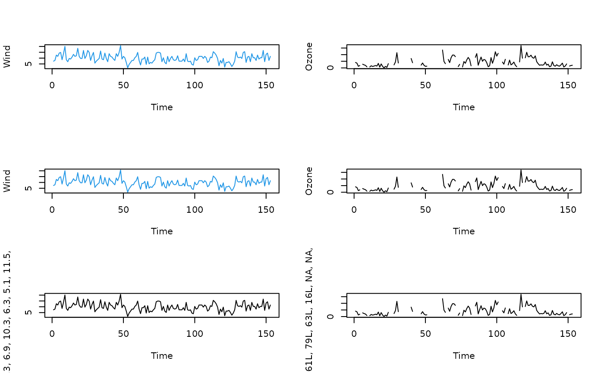

TSPlot.RdThis function is a wrapper to the standard plott() function in the graphics package. It is tailored to generating a time series plot, and adds detail to the stored object so that a better text description can be formulated using the VI() method in the BrailleR package. The function will become redundant once all other BrailleR functionality is working well with ggplot style graphics.
TimeSeriesPlot(.data, x, base=FALSE, ...)
| .data | the data.frame from which variables are drawn. Ignored if using base graphics. |
|---|---|
| x | a numeric variable. N.B. you must explicitly specify them by naming this argument. |
| base | Use base style graphics. Default is to use ggplot2 instead. |
| ... | additional arguments passed on to the plotting function. |
This function was originally designed to be a wrapper that would draw the base graphics plot for a time series. The saved object can be plotted later with a call to plot.
From v0.33.0 onwards, the function can complete the original intention, but the ggplot2 package's improved interaction with BrailleR means this is the now the preferred style of plot.
Either:
1. An object of class tsplot, with the addition of any calls to the main title or axis labels being explicitly stored even if a zero length character string, or
2. A ggplot object.
Godfrey, A.J.R. (2013) ‘Statistical Software from a Blind Person's Perspective: R is the Best, but we can make it better’, The R Journal 5(1), pp73-79.
A. Jonathan R. Godfrey
attach(airquality) op = par(mfcol=c(3,2)) plot(as.ts(Wind), ylab="Wind", col=4) test1 = TimeSeriesPlot(x=Wind, col=4, base=TRUE) #> Warning: "base" is not a graphical parameter #> Warning: "base" is not a graphical parameter #> Warning: "base" is not a graphical parameter #> Warning: "base" is not a graphical parameter #> Warning: "base" is not a graphical parameter test1 #does the plot method work? plot(as.ts(Ozone), ylab="Ozone") test2 = TimeSeriesPlot(x=Ozone, base=TRUE) #> Warning: "base" is not a graphical parameter #> Warning: "base" is not a graphical parameter #> Warning: "base" is not a graphical parameter #> Warning: "base" is not a graphical parameter #> Warning: "base" is not a graphical parameter test2 # does the plot method work?  par(op) detach(airquality)